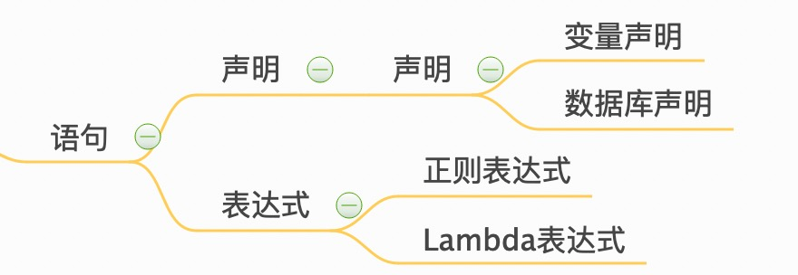

Kapacitor是一个开源数据处理框架，可以轻松创建警报，运行ETL作业和检测异常。Kapacitor是TICK堆栈的最后一块。
主要特点
以下是Kapacitor目前支持的一些功能，使其成为数据处理的绝佳选择。
- 支持两种处理方式：流处理和批处理。
- 通过任务调度，有计划地从InfluxDB数据库中查询数据，且InfluxDB的数据来源非常广泛，只要符合influx协议即可插入数据库。
- 通过
InfluxQL实现数据的转换。 - 可以将转换后的数据存储在InfluxDB中。
- 支持自用户定义的函数。
- 可以与HipChat，OpsGenie，Alerta，Sensu，PagerDuty，Slack等进行集成（专业的告警管理通知组件）。
学习路径
| No. | 内容 | 难度 |
|---|---|---|
| 1 | Kapacitor安装 | * |
| 2 | TICKscript语言 | * |
| 3 | Kapacitor配置文件 | ** |
| 4 | Kapacitor命令行 | ** |
| 5 | Kapacitor监控案例 | ** |


awsome tools
Ansible Kapacitor Linux上Kapacitor的配置管理和变更自动化
kapacitor-course kapacitor 脚本教程
influx-stress InfluxDB压测工具
InfluxData Sandbox TICK 沙箱